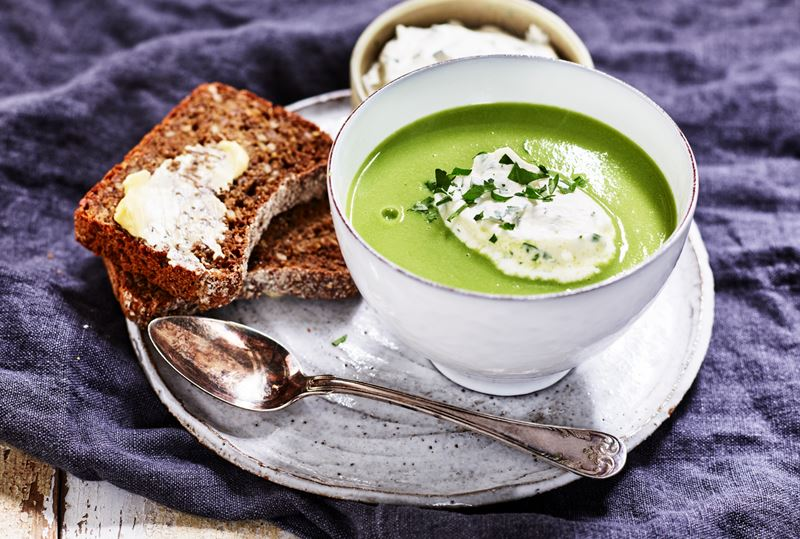

Gröna ärtor recipe!

Grön ärtsoppa lagar du snabbt och enkelt med frysta ärtor. Ärtsoppan får extra sting av en klick crème fraiche eller kvarg som du smaksätter med pepparrot eller vitlök.
Ingredienser
- Frysta gröna ärtor 500g
- Gul lök 1st
- vatten 7dl
- Grönsaksbuljong 2 tärningar.
- Kelda matlagningsgrädde
Gör såhär
-
Skala och hacka löken.
-
Koka upp vatten och buljongtärningar i en kastrull. Lägg i de frysta ärtorna och löken. Låt det koka under lock ca 5 min.
-
Mixa soppan och tillsätt grädde
-
Låt den koka upp